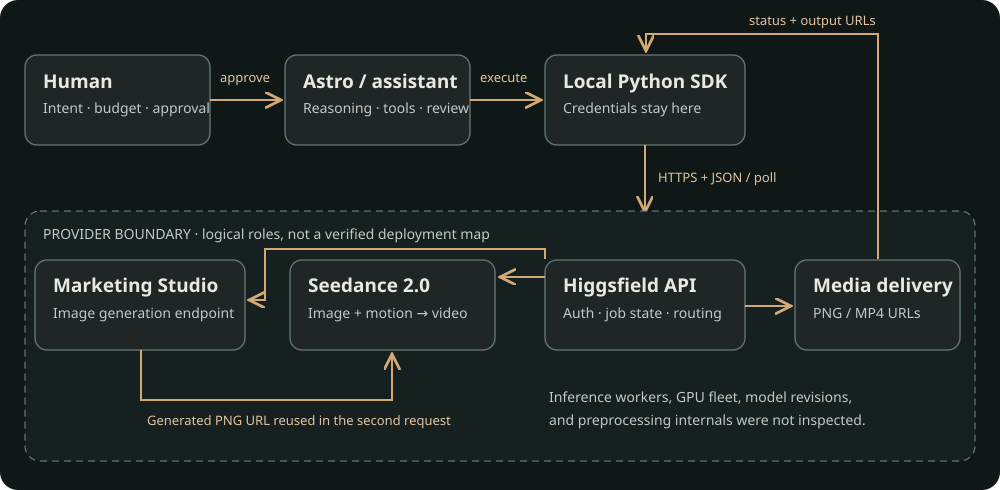
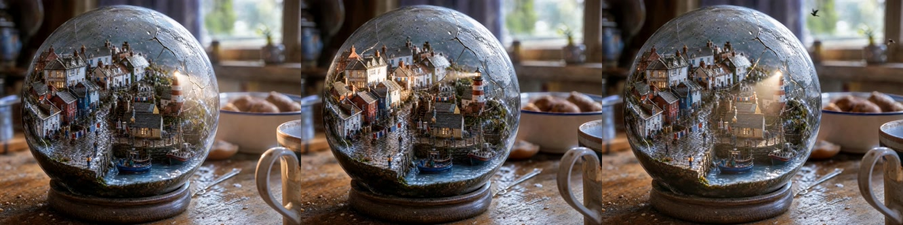

A rainy fishing village inside a cracked glass globe. One still image, then ten seconds of motion. This is the record of how they were made—and what the system did differently from the request.
Actual generated video. H.264 picture + AAC audio; 24 frames/s. Use the speaker control to hear the generated audio. Dedicated player ↗
THE RECORD
From an instruction to two artifacts.
01
Set up the API client
The human asked Astro to read the official SDK documentation and make a model-independent local client. The assistant installed the Python SDK, read credentials from a private environment file, and implemented submission, status checks, uploads, cancellation, and resumable waiting. Credentials were stored locally and sent over HTTPS to the API for authentication.
02
Preflight, then approve the image
The human supplied the image prompt and explicitly required a check before spending credits. Documentation and a local dry run checked the request shape; a read-only preset request checked authentication. That did not prove generation entitlement or guarantee visual quality. The human then approved one image generation.
03
Submit the image request
The SDK sent JSON to marketing-studio/image: the exact scene prompt, 2K, 3:2, and enhance_prompt: false. No reference image or marketing preset was supplied. The initial response acknowledged a job; later polling returned a completed PNG URL.
04
Inspect the real image
The inline chat preview failed to display, but the image existed. Opening the returned URL in the browser verified it. A display failure and a generation failure are different events; no replacement generation was needed.
05
Choose image-to-video, not text-to-video
The human wanted the same globe, 10 seconds at 720p. Seedance 2.5 was investigated, but the final approved model was Seedance 2.0. The key handoff was image_url: the actual generated PNG URL went into the second request.
06
Submit once; wait on the same job
The assistant added explicit composition and camera constraints to the motion prompt, then sent the request to bytedance/seedance-2.0/image-to-video. Audio was enabled. A receipt was saved before polling. The API reported in_progress, then completed, returning an MP4 URL.
07
Measure and publish the result
The finished video played in the browser. A later file probe confirmed its actual dimensions, duration, codecs, and frame rate. The PNG and MP4 were copied byte-for-byte to this public site; their hashes are recorded. This site serves saved media and never runs the generation API.
THE COMMUNICATION MAP
Who is doing which job?
“The AI made it” hides several independent systems. Astro is the name used here for the Codex language-model assistant. Its exact runtime model/version is not established by the public artifacts. It selected tools and assembled requests; the media models produced the image and motion.

Solid arrows show the logical communication flow. The dashed provider boundary is intentionally opaque: it does not claim which company operated a particular GPU.
Human: intent and authority
The human chose the scene, approved each paid generation, required the existing globe as the source, and made the final model, duration, and resolution choices.
The messages crossing those boundaries
From → to
Message
What comes back
Human → Astro
Prompt, settings, and approval
Proposed request and later the results
Astro → local tool
Run the SDK with a model ID and JSON
Exit status, receipt, and result data
SDK → Higgsfield
Authenticated HTTPS generation POST
Request ID and lifecycle URLs
SDK → Higgsfield
Repeated GET status checks for that ID
Queued / running / terminal state
Image job → video job
PNG delivery URL in image_url
Image-conditioned video generation
Browser → media host
GET the PNG or MP4
Media bytes; not another generation
THE INPUTS
Keep the prompt and the payload separate.
A prompt describes the desired scene. The surrounding JSON chooses the model's operating parameters. Neither alone fully specifies the job.
Image prompt · exact user text
Macro photograph of a complete rainy fishing village living inside a cracked glass globe on a kitchen table. Tilt-shift, tiny wet cobblestones, laundry lines, a lighthouse the height of a spoon. Morning window light raking across the rim. Magical realism but every surface still reads as real ceramic, water, and wood.
Macro photograph of a complete rainy fishing village living inside a cracked glass globe on a kitchen table. Tilt-shift, tiny wet cobblestones, laundry lines, a lighthouse the height of a spoon. Morning window light raking across the rim. Magical realism but every surface still reads as real ceramic, water, and wood. The camera doesn't move for the entire shot. Inside little people walk around the streets. The water move. The boat rocks naturally. A couple of birds fly through the sky inside the globe.
The following text was appended to the original prompt before submission. It requests continuity; it does not enforce it mathematically.
Use the supplied image as the starting frame. Preserve its globe, village layout, kitchen setting, framing, and lighting. One continuous locked-off shot, with no camera movement, zoom, cuts, or scene transitions. All village animation stays inside the globe.
POST /marketing-studio/image
{
"prompt": "Macro photograph of a complete rainy fishing village living inside a cracked glass globe on a kitchen table. Tilt-shift, tiny wet cobblestones, laundry lines, a lighthouse the height of a spoon. Morning window light raking across the rim. Magical realism but every surface still reads as real ceramic, water, and wood.",
"resolution": "2k",
"aspect_ratio": "3:2",
"enhance_prompt": false
}
Video request · the generated image is the starting input
The original run used the provider-hosted image URL. For privacy and durability, this reproduction payload uses the byte-identical public copy on GitHub Pages.
POST /bytedance/seedance-2.0/image-to-video
{
"image_url": "https://az9713.github.io/cracked-glass-globe/assets/globe.png",
"prompt": "Macro photograph of a complete rainy fishing village living inside a cracked glass globe on a kitchen table. Tilt-shift, tiny wet cobblestones, laundry lines, a lighthouse the height of a spoon. Morning window light raking across the rim. Magical realism but every surface still reads as real ceramic, water, and wood. The camera doesn't move for the entire shot. Inside little people walk around the streets. The water move. The boat rocks naturally. A couple of birds fly through the sky inside the globe. Use the supplied image as the starting frame. Preserve its globe, village layout, kitchen setting, framing, and lighting. One continuous locked-off shot, with no camera movement, zoom, cuts, or scene transitions. All village animation stays inside the globe.",
"duration": 10,
"resolution": "720p",
"generate_audio": true
}
An image URL is an input reference, not a proof of pixel-perfect continuity. This run supplied the correct image and preserves its recognizable scene; a frame-level exact-match test was not performed.
WHAT WE CAN CLAIM
Observed, documented, inferred, unknown.
OBSERVED
The run and its files
One image job and one video job completed. The video used the image's URL. Browser playback worked. The files have measured dimensions and hashes. There is no recorded regeneration loop.
DOCUMENTED
The API contract
These endpoints accept the shown inputs. Jobs are asynchronous. Status reads follow a request ID. The provider documents billing estimates and retention. These statements describe the published interface, not its complete implementation.
INFERRED
How the service is organized
A generation service needs scheduling, compute, storage, and delivery. Their placement is drawn as logical roles. We did not inspect its queue technology, GPU hardware, region, worker ownership, or exact routing.
UNKNOWN
Hidden execution details
The response did not establish the Marketing Studio endpoint's underlying model revision, Seedance build, random seed, preprocessing rules, or exact charge. A public endpoint name is not a full model provenance record.
Visual continuity has limits

Three ordered diagnostic samples from the generated clip, not a separate generation. The recognizable scene persists; strict camera lock, every requested action, and pixel-level identity have not been quantitatively certified. An AAC stream exists; the soundtrack's semantic fidelity has not been audited.
PRICE IS A MEASUREMENT PROBLEM
A calculation is not an invoice.
The preflight estimated $3.02 for Seedance 2.0 at 10 seconds and 1280 × 720, before discounts. That was a public-rate calculation. It did not verify the account's discount or final debit, and the delivered dimensions differed.
While preparing this report, we found the documented POST /estimate/{model} route. A better next run would request an authenticated quote using its complete payload before generation. That quote would still be a current estimate, not proof of the historical charge. Billing documentation ↗
Explore the published token formula
Seedance 2.0: $0.014 per 1,000 video tokens for the documented 480p/720p/1080p tiers. Still-image input adds no input-video duration. Fixed 24 fps in the published billing formula.
This local calculator sends no request and does not check account pricing. Applying the formula to measured file dimensions is illustrative; actual metering may normalize settings or duration differently. Published rate and formula ↗.
QUESTIONS THE HAPPY PATH HIDES
What can surprise the human?
1. Did a timeout mean the paid job never started?
No. The server can accept a request before the client loses the reply. Repeating the POST may create a second paid job. This client disables automatic submission retries, saves accepted request IDs, and resumes polling. If no ID arrived, inspect the console before resubmitting.
2. Does a valid key prove access to this model?
No. The initial read-only authentication check used a preset endpoint. Entitlement, credits, model state, and input validation are separate checks. The later successful image and video jobs proved those particular runs were accepted; they do not establish universal future access.
3. Does “720p” promise an exact width and height?
This run shows why the returned file must be measured. The 720p request produced 1112 × 834, changing the source aspect ratio. The exact transformation is unproven. Future work should check documented aspect handling and compare the first frame against a deliberately prepared source image before promising preservation.
4. Does “starts with this image” mean identical pixels?
Image conditioning anchors composition, but models can resize, crop, restyle, or invent motion. The source was correctly supplied here; a pixel-identical first-frame guarantee was not demonstrated. Keep both artifacts and evaluate framing, object identity, motion, and temporal consistency separately.
5. Can the result be reproduced exactly?
The saved prompts, parameters, SDK lockfile, and artifacts reproduce the procedure. They do not reproduce the exact stochastic output. No seed or immutable model revision was recorded. An endpoint may change behind the same name. Asset hashes identify these files; they do not prove the model internals.
6. Will the provider media URL work forever?
The provider documents at least seven days of availability, after which files may be removed. This publication stores the generated PNG and MP4 in the repository and serves them from GitHub Pages. The public examples no longer depend on account-scoped delivery links.
7. Where do credentials and private inputs go?
The local SDK sends credentials only to its configured API origin. Public browsers fetch saved media without a key. Prompts and reference images submitted for generation leave the local machine. A future private-reference workflow should review the provider's current data terms and use controlled storage; a public image URL is accessible to anyone who has it.
8. Is the API wrapper a complete production system?
No. It is a small local demonstration. It lacks a durable multi-user job service, a billing ledger, a webhook receiver, strict per-model schema validation, and an account estimate command. It also reconstructs status URLs on the configured origin; the official lifecycle guide recommends retaining returned URLs. Production hardening must preserve an explicit trusted-host policy instead of forwarding keys to arbitrary URLs.
9. What about ownership, consent, and source attribution?
The prompt is a fictional scene, not a photographed private village. Generated media and source references are labeled. Publication does not establish copyright ownership, exclusivity, or blanket commercial clearance. No third-party branding or Paul's video footage was incorporated into these artifacts.
10. Did the newer model create the final clip?
No. Seedance 2.5 was researched and priced, but the final human approval explicitly chose Seedance 2.0. Keeping a decision record prevents a considered model from being mistaken for the model actually used.
REPRODUCE THE WORKFLOW
Two explicit submissions. One image handoff.
The repository contains the client, pinned dependencies, 27 offline tests, sanitized example requests, and the finished media. No key is included. Run locally; GitHub Pages is only the publication layer.
uv sync --locked
# Copy .env.example to .env and add your own credential privately.
uv run python hf.py doctor --online
uv run python hf.py run marketing-studio/image --input examples/globe-image.json --dry-run
# The commands below spend API credits.
uv run python hf.py run marketing-studio/image --input examples/globe-image.json
# For your own new image, replace image_url in examples/globe-video.json.
uv run python hf.py run bytedance/seedance-2.0/image-to-video --input examples/globe-video.json
The video example defaults to this published globe image. To animate your newly generated image instead, set image_url to its returned URL. Do not accidentally animate the old artifact while claiming a fresh end-to-end run.
The starting inspiration and prompt examples came through Paul J Lipsky's “There's a Cheaper Way To Use Higgsfield (no subscription)”. The title and channel were verified through YouTube metadata. We did not conduct a full transcript audit or a subscription-versus-API cost study; the title is attribution, not a cost conclusion.
This is an independent technical walkthrough, not an advertisement, sponsorship, or endorsement. It records how an API was used, what the artifacts show, and what remains unknown. Source documentation was checked on September 23, 2026 and can change.